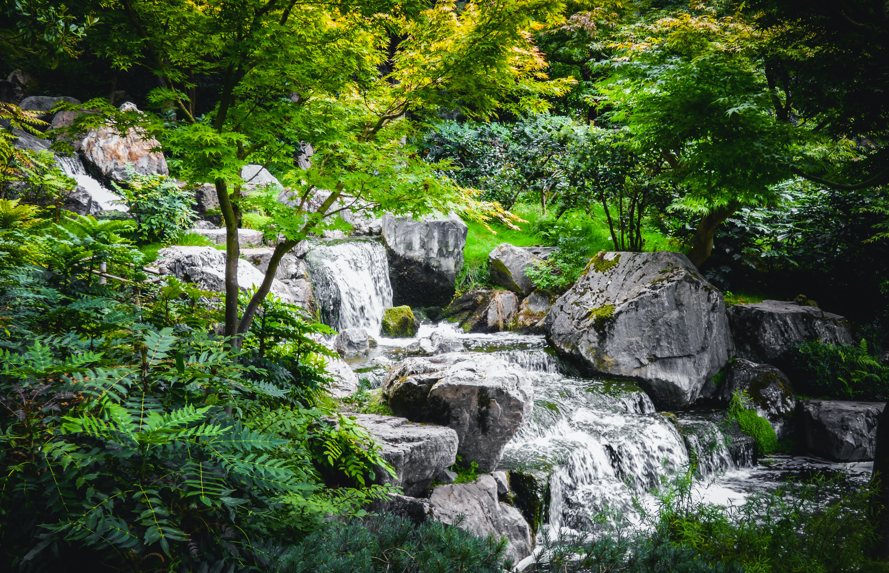
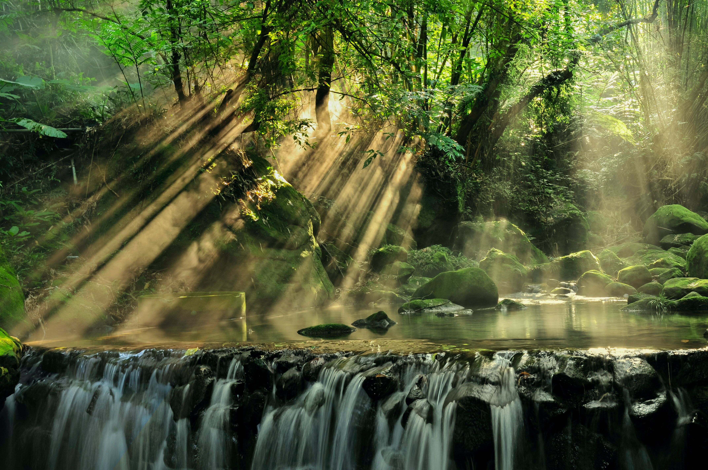

"Water is Beautiful"
A waterfall is a river or other body of water's steep fall over a rocky ledge into a plunge pool below. Waterfalls are also called cascades.

The process of erosion, the wearing away of earth, plays an important part in the formation of waterfalls. Waterfalls themselves also contribute to erosion.
Often, waterfalls form as streams flow from soft rock to hard rock. This happens both laterally (as a stream flows across the earth) and vertically (as the stream drops in a waterfall). In both cases, the soft rock erodes, leaving a hard ledge over which the stream falls.
A fall line is the imaginary line along which parallel rivers plunge as they flow from uplands to lowlands. Many waterfalls in an area help geologists and hydrologists determine a region's fall line and underlying rock structure.
This site is a gallery of different bodies of water.